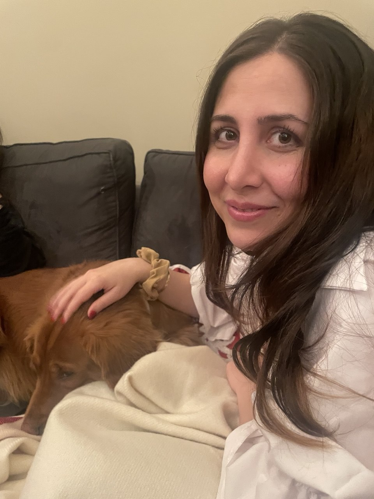

About Me
I am a Ph.D. student and graduate research assistant in Industrial & Systems Engineering at Lehigh University, advised by Prof. Frank E. Curtis and Prof. Daniel P. Robinson. My research brings optimization rigor to modern machine-learning systems, with a focus on exact fairness constraints, scalable neural-network training, and stochastic optimization.
I develop theory and end-to-end experimental pipelines in PyTorch, CUDA, and Hugging Face/PEFT. Before joining Lehigh, I earned my master's degree in Industrial Engineering from Sharif University of Technology.

Outside of research, I absolutely love dogs. They never fail to make me smile!
Publications
Research & Projects
Fair Supervised Learning with Exact Constraints
Released fairget for training binary PyTorch classifiers with differentiable fairness constraints and matched unconstrained baselines. It supports demographic parity, disparate impact, and equal opportunity.
Constrained LoRA Fine-Tuning for Bias-Controlled LLMs
Investigating whether exact-tolerance fairness constraints can scale to LLM fine-tuning through a custom constrained optimizer built around Hugging Face PEFT/LoRA and evaluated on BBQ and BOLD bias benchmarks.
Low-Order Hessian Imitation
Co-developed a neural-network optimizer that uses an auxiliary loss to form low-order curvature approximations at Adam-level computational cost, with a convergence guarantee and strong benchmark performance.
Adaptive Sampling Interior-Point Method
Developed an adaptive-sampling solver for stochastic optimization that combines retrospective approximation with barrier methods and sample-size control; validated on CUTEst problems with more than 4,000 variables.
Teaching & Service
Co-Chair, MOPTA 2026, GradOpt & ColOpt
Co-organized Lehigh ISE's four-day optimization program, coordinating invited speakers, technical sessions, scheduling, and logistics across the GradOpt workshop, MOPTA conference, and ColOpt junior-faculty colloquium.
OptML Group Tutorial: LLMs, Transformers & Hugging Face
Led a technical tutorial for the OptML group on the foundations of large language models, Transformer architectures, and practical workflows in the Hugging Face ecosystem.